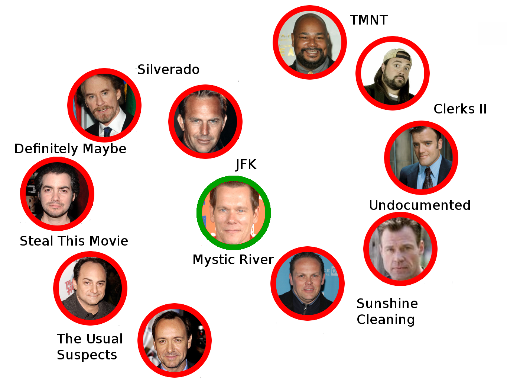
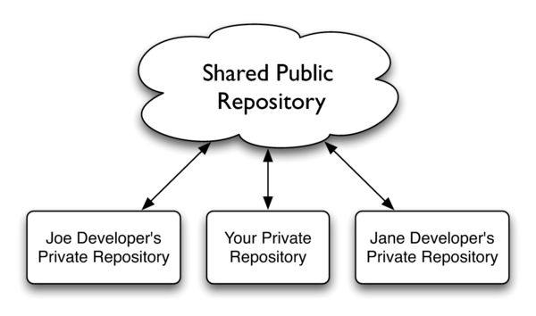

Use Git Like a Boss
Kevin W. Gisi
Chicago Code Camp 2—May 1, 2010
Iowa Code Camp 5—May 1, 2010
Summary
Move out Subversion; there's a new man in town. Learn how a decentralized version control system can help make your workflow easier, regardless of what language you use. We'll walk through how to manage a project using Git, and use some branching, tagging, recovery, and a host of other features along the way. Come see how easy it is to branch and merge without the usual headaches.
Big Day
Use Git Like the Godfather
 I'm going to make you an offer you can't refuse
I'm going to make you an offer you can't refuse
Centralized Versioning

Centralized Versioning

Use Git Like Douglas Reynholm
This is very important. I have a vital meeting to attend, and I've just shot myself in the leg.
Use Git Like Donald Trump
 Let's talk merger.
Let's talk merger.
Use Git Like Linus Torvalds
 I decided I can write something better than anything out there in two weeks. And I was right.
I decided I can write something better than anything out there in two weeks. And I was right.
Basic Git Syntax
git init
git add .
git commit -m "Initial commit"
Subsequent Commits
Add then commit:
git add newfile.txt
git add trackedfile.txt
git commit -m "Updated trackedfile, added newfile"
Shorthand:
git commit -am "Added all changes to tracked files"
Distributed Versioning

Distributed Versioning

- No more tiers
- Will of the people
- Accountability
- Security
- Redundancy
Grabbing Remote Repositories
Grab a remote repository:
git clone git://github.com/gisikw-slides/use-git-like-a-boss.git
cd use_git_like_a_boss/
Collaborating with Remotes
Pull changes:
git pull origin master
Push changes
git push origin master
Use Git Like Mr. Spacely
 In the future, we use GitHub!
In the future, we use GitHub!
Distributed in the Wild

Distributed in the Community
Distributed in the Office

Git Branches
git branch gh-pages
git checkout gh-pages
slideshow slides.md
git commit -am "Generated slides"
...
Switching Branches
git checkout master
ls
Use Git Like Michael Scott
 They say a cluttered desk means a cluttered mind.
They say a cluttered desk means a cluttered mind.
Feature-Based Branches
- master
- experimental
- gh-pages
- growl_notifications
- irc_notifications
- remote_control
Use Git Like Jimmy James
 You want my advice? Well I'm not going to give it to ya.
You want my advice? Well I'm not going to give it to ya.
Merging with Git
git checkout master
git merge experimental
When Things Go Wrong
CONFLCIT (content): Merge conflict in conference.rb
Automatic merge failed; fix conflicts and then commit the result.
Conflict Files
class Conference
def best_presentation
<<<<<<< HEAD
"Kevin's, of course"
=======
"Ola Bini's talk"
>>>>>>> experimental
end
end
Fixed File
class Conference
def best_presentation
"Kevin's, of course"
end
end
Committing the Fix
git commit -am "Fixed merge conflict, Kevin's presentation is vastly superior"
Use Git Like Bill Lumbergh
 Actually, given that we can merge instantaneously, I'm not gonna need you to come in on Saturday anymore. Yeah..........
Actually, given that we can merge instantaneously, I'm not gonna need you to come in on Saturday anymore. Yeah..........
Stealing Branches
git branch --track muwahaha milton/stapler
git checkout muwahaha
Pushing and Pulling Branches
git pull milton stapler
git push milton stapler
Corporate Doesn't Adopt
 Bob is excited about Git!
Bob is excited about Git!
Use Git Like Bob Kelso
 This is not "Take Your Problems to Work Day". It's just "Work Day"
This is not "Take Your Problems to Work Day". It's just "Work Day"
Git-SVN
git svn clone https://svn.kde.org/home/kde/trunk/kdesupport/strigi
cd strigi
...
Git-SVN
Push commits to Subversion:
git svn dcommit
Pull changes from Subversion:
git svn rebase
Use Git Like Mr. Burns
 This is the type of trickery I pay you for.
This is the type of trickery I pay you for.
Fixing Mistakes
git reset --hard
git reset --hard ORIG_HEAD
git reset --soft HEAD^
git commit --amend
Oh Yeah, There's...
.gitignore
Tagging
Shashing
Submodules
Hooks
Centralized Culture
The Cathedral:
Commit when you're done
Merging is expensive - limit your branching
Always have server access
I am the SERVER thy God. Thou shalt have no stranger servers before Me.
Decentralized Culture
The Bazaar:
Commit is equivalent to auto-save
Branch for everything - don't convalute features
Keep the repository local
Use external servers as common points, but remember that there is no single "right way" to write code